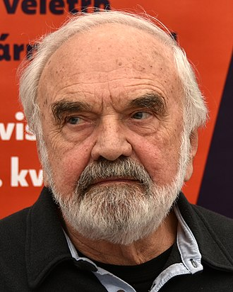

Slavná osobnost: Zdeněk Svěrák
| Portrét | Základní údaje | Významné činy | |
|---|---|---|---|
|  | Zdeněk Svěrák |
DivadloHubdaScénář |
|
| 28.března 1936 | Stále žije, má 85 let | ||
|
|
|||
| Zdeněk Svěrák v roce 2019 | |||
| Podívejte se na wikipedii pro více informací | |||
Značky a atributy tabulky
- colspan
- Atribut zajišťující ropětí přes několik sloupců
- rowspan
- Atribut zajišťující ropětí přes několik řádků
- table
- Definuje tabulku
- th
- Definuje vrchní buňku tabulky
- tr
- Definuje řádek v tabulce
- td
- Definuje buňku v tabulce
- thead
- Seskupí vrchní kontent v tabulce
- tbody
- Seskupí kontent uprostřed tabulky
- tfoot
- Seskupí spodní kontent tabulky